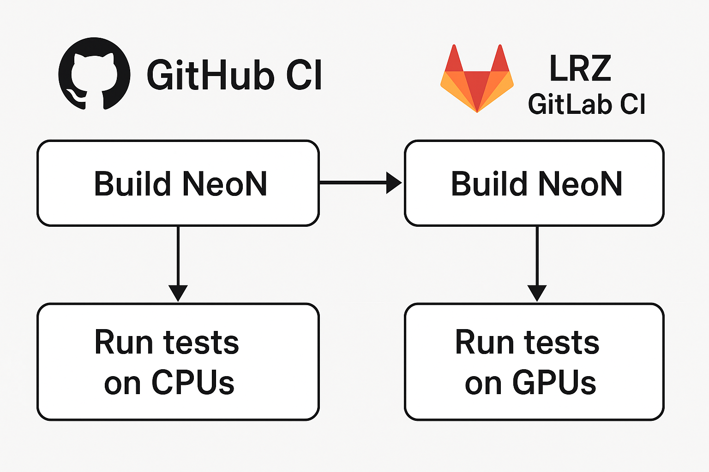

Continuous Integration¶
The NeoN project uses a two-level Continuous Integration (CI) system to ensure correct builds, GPU compatibility, and automated benchmarking.
The main repository is hosted on GitHub, and GPU-based workflows are delegated to LRZ GitLab, where jobs are executed on both NVIDIA and AMD GPUs. The CI architecture for NeoN is illustrated below.


Continuous Integration on GitHub¶
GitHub CI is responsible for managing the overall NeoN CI workflow.
Responsibilities:
Build and test NeoN on CPU across different platforms (Linux, macOS, Windows).
Push the source code and commit metadata to LRZ GitLab.
Cancel outdated pipelines on LRZ GitLab for the same branch.
Trigger new LRZ GitLab pipelines for GPU builds and benchmarks.
Build the documentation. A pull request gets a preview at
https://exasim-project.com/NeoN/Build_PR_<number>only if it changesdoc/orexamples/; thelatestdocumentation is rebuilt on every push todevelop.
Note
The GitHub CI acts as the control layer for all NeoN CI operations. Developers interact only with GitHub — all LRZ GitLab pipelines are triggered automatically.
Python Wheel CI/CD¶
In addition to the build-and-test workflows, NeoN provides a dedicated GitHub Actions workflow for
building and distributing Python wheels. This workflow is defined in
.github/workflows/python_wheels.yaml and is responsible for release packaging rather than for
ordinary pull-request testing.
Release builds are managed by GitHub Actions and cibuildwheel. The workflow creates Python
wheels inside controlled CI environments and uploads or publishes the resulting artifacts.
The workflow supports both stable and development versions. For a tag such as v0.1.2, the
package version is derived from the tag and treated as a stable release. For manually triggered
builds, the workflow generates a development version with a .dev suffix so that test artifacts
do not conflict with stable releases.
CPU wheels are built for Linux x86-64, Linux ARM64, Windows AMD64, macOS Apple Silicon, and macOS Intel. The matrix covers CPython 3.11 through 3.13. MPI and optional dependencies such as PETSc, ADIOS2, and SUNDIALS are disabled for these wheels, and CUDA/HIP support is disabled. This keeps the default PyPI package installable without requiring those external HPC libraries.
After each CPU wheel is built and repaired, cibuildwheel installs it into an isolated test
environment. The current installed-wheel check verifies that the package imports, its distribution
and module versions agree, its backend feature indicators are valid, and serial execution support is
present. The complete Python binding test suite is not currently executed against every repaired
wheel.
CUDA wheels are handled separately. The Linux wheel job installs the CUDA toolkit inside the
manylinux container before running cibuildwheel. CUDA wheels are built with Kokkos CUDA
support enabled and receive a local version suffix such as +cuda128. The NVIDIA driver library
libcuda.so.1 is explicitly excluded from wheel repair, because it is provided by the user’s
installed NVIDIA driver and must not be bundled into the wheel.
Note
GitHub-hosted runners provide CPU machines only. They can compile CUDA wheels if the CUDA toolkit is installed in the build container, but they cannot run or import the CUDA extension as a full runtime test because no NVIDIA driver or GPU is available. CUDA wheels must therefore be validated on a machine with a compatible NVIDIA driver and GPU.
Publishing is separated by wheel type:
CPU wheels are published to PyPI through PyPI Trusted Publishing. This uses GitHub’s OpenID Connect identity instead of storing a long-lived PyPI API token.
CUDA wheels are uploaded as GitHub Actions artifacts and can be attached to GitHub Releases. This keeps GPU-specific, large, driver-dependent wheels separate from the default PyPI package.
To rehearse the publish flow before a real release, dispatch the workflow manually with
build_wheels, build_cpu and publish_repository=testpypi. This builds a unique .dev
version and uploads it to TestPyPI, so Trusted Publishing configuration and package metadata can be
validated without touching the production index. TestPyPI needs its own trusted-publisher entry and a
GitHub testpypi environment; publish_repository=pypi targets the production index instead.
The workflow also includes recovery paths for already-built artifacts. If a build succeeds but a publish or release-upload step fails, existing wheel artifacts can be reused by providing the original GitHub Actions run ID. This avoids rebuilding expensive CPU or CUDA wheels only to repeat an upload step.
At the time of writing, the CUDA wheel path is intentionally narrow while it is being validated: it builds the CUDA 12.8 variant for CPython 3.12 on Linux x86-64. Runtime wheel testing is skipped in that build job because the GitHub-hosted runner has no GPU. The same structure can be extended to additional Python versions, CUDA versions, and GPU architectures after the packaged wheel is validated on production hardware.
Conda package CI/CD¶
.github/workflows/conda_packages.yaml builds the neon-pde conda package with
rattler-build and publishes it to a prefix.dev channel, so that NeoN can
be consumed from a pixi environment. It runs on the same triggers as the wheel
workflow (v*.*.* tags and manual dispatch) and resolves its version with the same
scripts/set_package_version.py logic, so a wheel and a conda package built from one commit report
the same neon.__version__.
It also runs nightly at 02:00 UTC on develop and publishes the CPU and CUDA packages with a
development version such as 0.3.1.dev2026112602001 to the separate
exasim-project/nightlies channel. Nightly
versions sort above the latest release, so keeping them out of exasim-project/main keeps that
channel resolving to releases. The nightly only builds if
develop moved since the last successful nightly run, so an unchanged develop costs a single
short job, and a failed nightly is retried the next night. Uploads to the nightly channel use their
own API key, the PREFIX_DEV_NIGHTLY_API_KEY secret of the prefix-dev environment.
The recipe lives in recipe/recipe.yaml. ci/build_conda_packages.sh is the single entry point
used by both CI and local builds: it exports NEON_VERSION, writes the per-build variant
configuration (python version, GPU flavour, C runtime floor) and calls rattler-build.
ci/install_rattler_build.sh installs a pinned, checksum-verified rattler-build release.
CPU packages are built for CPython 3.11-3.13 on linux-64, linux-aarch64, osx-64 and
osx-arm64. There is no win-64 conda package, because NeoN disables Ginkgo on Windows and the
wheel is the supported Windows path. The GPU flavour is encoded in the build string
(cpu_py312_*, cuda_py312_*, rocm_py312_*) so all flavours can coexist in one channel.
Like the wheels, these packages are built without MPI. For downstream MPI codes such as NeoFOAM
there is one additional linux-64 CPython 3.12 build with NeoN_WITH_MPI=ON against
conda-forge’s Open MPI 4.1, with the build string cpu_openmpi_py312_*. It ranks below the
nompi build, so it is only installed when asked for, e.g.
pixi add "neon-pde=*=cpu_openmpi*". On a machine with a system Open MPI 4.1 (as on Ubuntu 24.04),
adding "openmpi=4.1.*=external_*" from the conda-forge/label/mpi-external channel (the 4.1
external builds in conda-forge itself are marked broken) makes the package use the system library
instead of a second copy.
That Open MPI build exists twice: built with GCC (cpu_openmpi_py312_*) and with clang 19
(cpu_openmpi_clang_py312_*). GCC 14+ and clang 18+ mangle C++20 requires-clauses differently,
so code compiled with clang 18 or newer cannot link the constrained members a GCC-built NeoN
exports, and needs the clang build. The clang build ranks lowest, so it is only installed when asked
for, e.g. pixi add "neon-pde=*=cpu_openmpi_clang*".
Unlike the wheels, the conda package is installed by CMake rather than by pip: the C++ runtime
and its bundled Kokkos, Ginkgo, Umpire and cpptrace libraries go to $PREFIX/lib, headers and
CMake package files to $PREFIX/include and $PREFIX/lib/cmake/NeoN, and only the python
package is moved into site-packages. Relocation is handled by rattler-build’s rpath rewrite
instead of by auditwheel/delocate.
Note
The build clones Kokkos, Ginkgo and Umpire from GitHub through CPM, so it needs network access during the build. That is acceptable for our own channel but would not pass conda-forge’s offline build policy.
Publishing requires two repository settings: a PREFIX_DEV_CHANNEL variable naming the target
channel and a PREFIX_DEV_API_KEY secret holding an API key with write access to it. The publish
job runs in the prefix-dev GitHub environment and uploads with --skip-existing, so re-running
it after a partial failure does not fail on packages that already landed.
The CUDA package mirrors the CUDA wheel: CUDA 12.8, CPython 3.12, Linux x86-64, NVIDIA Ampere
(sm_80). It depends on the __cuda virtual package so it cannot resolve on a machine without a
suitable driver, and like the CUDA wheel it is not runtime-tested in CI. The ROCm package is
manual-dispatch only and experimental: conda-forge ships hip-devel and hipcc but none of the
ROCm math libraries (rocBLAS, rocSPARSE, rocThrust, rocPRIM) that Ginkgo’s HIP backend needs, so that
flavour is Kokkos HIP without a Ginkgo solver backend.
Continuous Integration on LRZ GitLab¶
The LRZ GitLab CI handles GPU-related operations.
Responsibilities:
Build and test NeoN on NVIDIA and AMD GPU on Linux.
Run benchmark jobs after successful build and test stages.
Report the status and results back to GitHub for unified monitoring.
Development Workflow¶
The development workflow for NeoN proceeds as follows:
A developer opens a pull request (PR) or pushes a commit to an existing PR on GitHub.
GitHub CI builds and tests NeoN on CPUs, and pushes the same branch to LRZ GitLab.
GitHub CI cancels all pending or running LRZ GitLab pipelines for that branch.
GitHub CI triggers a new LRZ GitLab pipeline.
LRZ GitLab CI builds and tests NeoN on GPUs.
(Optional) Benchmark jobs are executed after successful testing.
The developer monitors all results directly on GitHub.
Tip
Use the benchmark label on a NeoN pull request to trigger benchmarking jobs.
Integration Tests¶
NeoN’s CI only tests NeoN. Downstream projects such as NeoFOAM pin a NeoN version and test against it in their own CI; updating that version there is what reveals integration issues. Issues caused by NeoN are reported as NeoN issues.
Pull Request Labels¶
NeoN’s GitHub repository uses labels to control the CI behavior.
Relevant Labels:
skip-build— Skip all build-and-test jobs on both GitHub and LRZ GitLab.benchmark— Enable GPU benchmarking jobs after successful build-and-test jobs.
These labels allow developers to customize the CI process according to their needs.
Summary¶
The NeoN CI system provides:
Unified GitHub-driven CI management.
Transparent CPU and GPU build workflows.
Automatic synchronization between GitHub and LRZ GitLab.
Branch-aware pipeline handling and cancellation.
On-demand GPU benchmarking via PR labels.